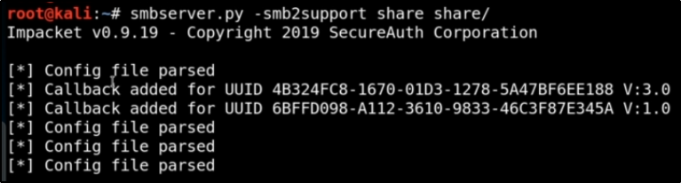

We are going to launch our smb server (smb2support is just because we have a smb2 target)

Now, we can make a connection to our SMB server, using a command:

Here, our SMB Server dumped an hash (a NTLMv2 hash!)

Now we can try to crack this hash with hashcat or similiar tools!!